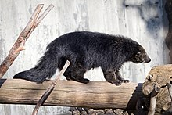
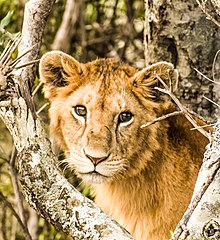
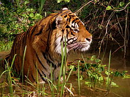

DeeDee's World
Welcome to My Space

WILDLIFE
From Wikipedia, the free encyclopedia. October 28, 2021
Wildlife traditionally refers to undomesticated animal species, but has come to include all organisms that grow or live wild in an area without being introduced by humans. Wildlife was also synonymous to game: those birds and mammals that were hunted for sport. Wildlife can be found in all ecosystems. Deserts, forests, rainforests, plains, grasslands, and other areas, including the most developed urban areas, all have distinct forms of wildlife. While the term in popular culture usually refers to animals that are untouched by human factors, most scientists agree that much wildlife is affected by human activities. Some wildlife threaten human safety, health, property, and quality of life. However, many wild animals, even the dangerous ones, have value to human beings. This value might be economic, educational, or emotional in nature.

WILDLIFE CONSERVATION
From Wikipedia, the free encyclopedia. October 28, 2021
Wildlife conservation refers to the practice of protecting wild species and their habitats in order to maintain healthy wildlife species or populations and to restore, protect or enhance natural ecosystems. Major threats to wildlife include habitat destruction, degradation, fragmentation, overexploitation, poaching, pollution and climate change. The IUCN estimates that 27,000 species of the ones assessed are at risk for extinction. Expanding to all existing species, a 2019 UN report on biodiversity put this estimate even higher at a million species. It is also being acknowledged that an increasing number of ecosystems on Earth containing endangered species are disappearing. To address these issues, there have been both national and international governmental efforts to preserve Earth's wildlife. Prominent conservation agreements include the 1973 Convention on International Trade in Endangered Species of Wild Fauna and Flora (CITES) and the 1992 Convention on Biological Diversity (CBD). There are also numerous nongovernmental organizations (NGO's) dedicated to conservation such as the Nature Conservancy, World Wildlife Fund, and Conservation International.
Damilola Dorcas a.k.a DeeDee
I'm just a girl tryna find a place in this world.
Popular Posts
-

Wildlife in Nigeria
Overexploitation is the harvesting of animals and plants -

Wild animal fights caught on camera
Monitoring methods can be categorized as either "direct" or "indirect" -

Wild animals are thriving in NYC right now!
America is privileged with a stunning array of animals, plants, and wild destinations
Tags
Travel New York London IKEA NORWAY DIY Ideas Baby Family News Clothing Shopping Music Games